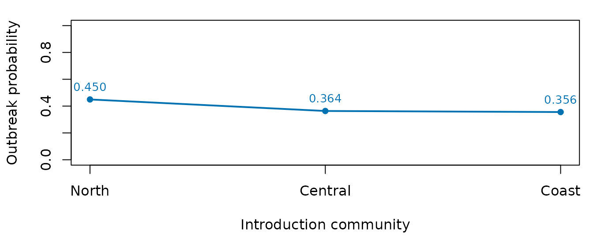
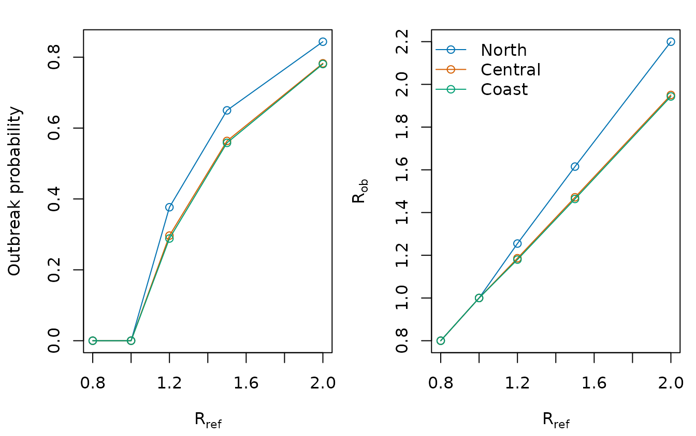

Start with a complete analysis
Routbreak describes the stochastic early phase of an epidemic in
connected communities. The reproduction matrix uses destination
rows and source columns: R[i, j] is the expected
number of infections in community i caused by one infected
individual in community j.
The following hypothetical three-community system is supercritical and strongly connected. Copy the complete block into a fresh R session after installing the package.
library(Routbreak)
community <- c("North", "Central", "Coast")
R <- matrix(
c(
0.95, 0.12, 0.05,
0.35, 0.85, 0.12,
0.12, 0.25, 1.05
),
nrow = 3,
byrow = TRUE,
dimnames = list(destination = community, source = community)
)
risk <- rob_table(R)
risk
#> community outbreak_probability R_ob R_local R_total R_ref
#> 1 North 0.4495513 1.328039 0.95 1.42 1.25996
#> 2 Central 0.3636076 1.242933 0.85 1.22 1.25996
#> 3 Coast 0.3557093 1.235855 1.05 1.22 1.25996Each row of risk answers a question about an
introduction into the named source community:
-
outbreak_probabilityis the probability that the branching process does not become extinct; -
R_obcompares expected offspring conditional on epidemic emergence with expected offspring conditional on extinction; -
R_localis the diagonal entry ofR, counting infections that remain in the source community; -
R_totalis the full source-column sum, counting infections generated in every destination; and -
R_refis the spectral radius of the complete system and therefore has the same value in every row.
The three introduction locations have positive but unequal outbreak
probabilities. R_local alone does not rank their epidemic
risk because it ignores where exported infections go. R_ob
is also not a community-specific replacement for R_ref: it
describes survival-conditioned offspring for a particular introduction
location, whereas R_ref characterizes growth of the whole
coupled system.
local({
old_par <- par(no.readonly = TRUE)
on.exit(par(old_par), add = TRUE)
x <- seq_len(nrow(risk))
par(mar = c(4.2, 4.2, 1.2, 0.8))
plot(
x, risk$outbreak_probability,
type = "o", pch = 16, lwd = 2, col = "#0072B2", xaxt = "n",
ylim = c(0, 1), xlab = "Introduction community",
ylab = "Outbreak probability"
)
axis(1, at = x, labels = risk$community)
text(
x, risk$outbreak_probability,
labels = sprintf("%.3f", risk$outbreak_probability),
pos = 3, cex = 0.82, col = "#0072B2"
)
})
Outbreak probability for an introduction into each community in the hypothetical example.
Installation
Routbreak is not yet available from CRAN. Install it from the public GitHub repository with:
install.packages("remotes")
remotes::install_github("peasantxuan/Routbreak")The package website provides the current function reference and tutorials.
The four reproduction quantities
The individual functions behind rob_table() are useful
when only one quantity is needed.
r_ref(R) # system-level reference reproduction ratio
#> [1] 1.25996
r_local(R) # infections that remain within each source community
#> North Central Coast
#> 0.95 0.85 1.05
r_total(R) # infections generated anywhere by each source community
#> North Central Coast
#> 1.42 1.22 1.22
p <- outbreak_prob(R)
r_ob(R, p) # supplied p is checked against the maximal fixed point
#> North Central Coast
#> 1.328039 1.242933 1.235855For Poisson offspring, outbreak probabilities satisfy
Here
refers to an introduction in source community
.
The matrix is transposed in the fixed point because R[j, i]
describes infections generated by source i in destination
j.
For positive , the Poisson outbreak reproduction ratio is
Consequently,
whenever
.
Whether R_ob exceeds one is therefore not, by itself,
evidence that a community benefits from network connections. Compare its
magnitude and spatial variation across introduction locations and with
R_local, R_total, and the common
R_ref.
Change overall transmissibility
scale_to_rref() changes the system-level reproduction
ratio without changing the relative entries of the matrix.
targets <- c(0.8, 1.0, 1.2, 1.5, 2.0)
scaled_results <- do.call(rbind, lapply(targets, function(target) {
scaled <- scale_to_rref(R, target)
transform(rob_table(scaled), target_R_ref = target)
}))
colors <- c("#0072B2", "#D55E00", "#009E73")
old_par <- par(mfrow = c(1, 2), mar = c(4.2, 4.2, 1.5, 0.8))
plot(
NA, xlim = range(targets),
ylim = c(0, max(scaled_results$outbreak_probability)),
xlab = expression(R[ref]), ylab = "Outbreak probability"
)
for (name in community) {
selected <- scaled_results$community == name
lines(
scaled_results$target_R_ref[selected],
scaled_results$outbreak_probability[selected],
type = "o", col = colors[match(name, community)]
)
}
plot(
NA, xlim = range(targets), ylim = range(scaled_results$R_ob),
xlab = expression(R[ref]), ylab = expression(R[ob])
)
for (name in community) {
selected <- scaled_results$community == name
lines(
scaled_results$target_R_ref[selected], scaled_results$R_ob[selected],
type = "o", col = colors[match(name, community)]
)
}
legend("topleft", community, col = colors, lty = 1, pch = 1, bty = "n")
Outbreak probability and outbreak reproduction ratio as the same spatial matrix is scaled to different reference reproduction ratios.
par(old_par)Below threshold, an irreducible primitive Poisson matrix has zero
outbreak probability and the published continuation sets every
R_ob to R_ref. Above threshold, introduction
locations can separate because their routes into the surviving process
differ.
Import a long-format matrix
as_rmatrix() makes orientation explicit when
reproduction means are stored as directed edges.
edges <- expand.grid(
destination = community,
source = community,
stringsAsFactors = FALSE
)
edges$mean_offspring <- mapply(
function(destination, source) R[destination, source],
edges$destination,
edges$source
)
R_from_long <- as_rmatrix(
edges,
source = "source",
destination = "destination",
value = "mean_offspring",
communities = community
)
identical(R_from_long, R)
#> [1] TRUEBy default, every directed pair must be present. An explicit row with
value zero creates a zero entry; an absent row is treated as unobserved
and causes an error. Set missing = "zero" only when the
scientific data definition makes absence equivalent to zero.
Check matrix structure
is_irreducible(R)
#> [1] TRUE
matrix_diagnostics(R)
#> community component component_size cyclic_period primitive_component
#> 1 North 1 3 1 TRUE
#> 2 Central 1 3 1 TRUE
#> 3 Coast 1 3 1 TRUE
#> matrix_irreducible
#> 1 TRUE
#> 2 TRUE
#> 3 TRUEThe component diagnostic identifies reducible matrices and reports each strongly connected component’s cyclic period. A period of one is primitive. Periodicity matters for the generation-limit continuation below threshold; Routbreak does not replace a non-existent limit for an imprimitive matrix with an arbitrary cycle average.
Assumptions and supported cases
The calculation is an early-epidemic, multitype branching-process approximation with a fixed nonnegative reproduction matrix. Extinction means that the transmission chain eventually ends. Outbreak probability is not the final attack rate and does not describe epidemic size after emergence.
Poisson r_ob() supports supercritical irreducible
systems, primitive irreducible systems at or below threshold through the
published continuation, and diagonal matrices as independent
communities. General reducible non-diagonal matrices and periodic
continuation cases are reported rather than assigned an invented value.
The advanced overdispersion
tutorial covers independent-edge negative-binomial offspring; the inference tutorial covers estimation from
directed transmission data.
Scientific reference
The definitions and continuation are from Wang B and Valdano E (2026), “Redefining and estimating the early-phase reproduction ratio for epidemic outbreaks in spatially structured populations,” PLOS Computational Biology 22(7): e1014425. https://doi.org/10.1371/journal.pcbi.1014425